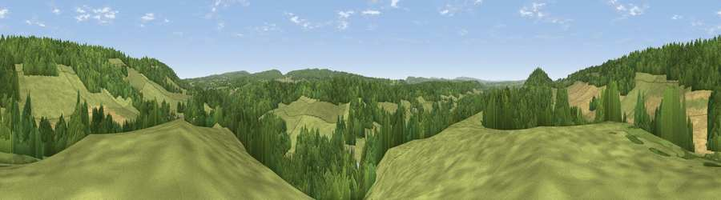

Viewpoint near Albury
#28795 in England · top 30% of its area beats it · near AlburyThe view, rendered

A 360° render of this exact spot computed from the terrain model, tree cover and land cover — summer colours, afternoon light, calibrated against photographs of famous viewpoints. Real trees, hedges and buildings will differ in detail.
The panorama
Grey silhouette: terrain skyline in each direction (720 bearings, Earth curvature and refraction included). Dashed green: skyline with trees (+15 m) and buildings (+8 m) as obstacles. Blue strip: how far the ground is visible on each bearing.
Where the view opens
Wedge length = distance to the farthest visible ground on that bearing (vegetation-aware). Rings at 10, 25 and 50 km.
What fills the view
45% grassland · 41% woodland · 12% cropland · 1% water ·
Angular shares of the visible panorama (visual magnitude), not map area. Landscape diversity 0.46 (0–1 Shannon).
Key numbers
More beautiful places nearby
The staircase of upgrades: each row has a higher view potential than everything closer. Driving times are estimates from straight-line distance, calibrated against real road routing — check an actual route before setting out.
| Place | Direction | Drive | Score |
|---|---|---|---|
| Viewpoint near Shere | ENE · 1 km | ~4 min | 50.1 |
| Viewpoint near Shere | NE · 2 km | ~6 min | 52.9 |
| St Martha's Hill | W · 3 km | ~6 min | 59.5 |
| Viewpoint near Rowly | S · 6 km | ~13 min | 61.5 |
| Viewpoint near Rowly | SSE · 6 km | ~13 min | 65.5 |
| Pitch Hill | SSE · 7 km | ~14 min | 68.2 |
| Viewpoint near Holmbury St Mary | SE · 7 km | ~15 min | 69.3 |
| Viewpoint near Coldharbour | ESE · 10 km | ~19 min | 71.3 |
51.22486, -0.49308 · source: screening · position refined by local search. Computed location — check access rights before visiting.